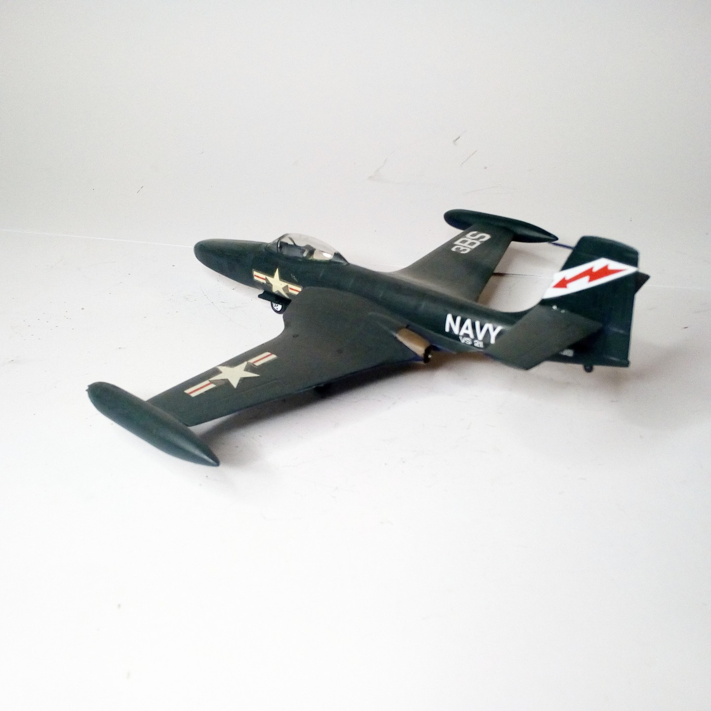
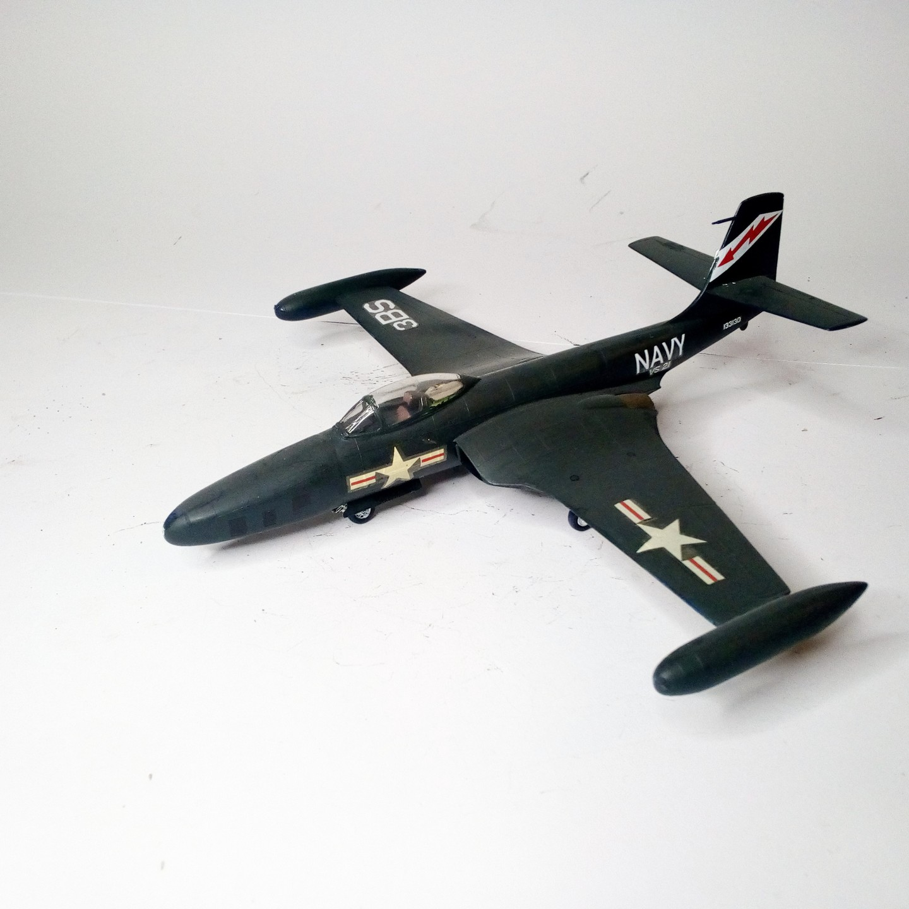

Aerei · scale model archive
Mcdonnell F2H-2 Banshee
Mcdonnell F2H-2 Banshee — Kit: Airfix, Scale: 1/72. VF-172 Blue Bolts R-210 | 124969 (Lt. G.Y. Warren) October 1951 Korean War» - USS Essex KR #1/72…

Photo gallery

English description
VF-172 Blue Bolts R-210 | 124969 (Lt. G.Y. Warren) October 1951 Korean War» - USS Essex KR
#1/72 #Airfix
Descrizione italiana
VF-172 Blue Bolts R-210 | 124969 (Lt. G.Y. Warren) ottobre 1951 Korean War» - USS Essex KR.